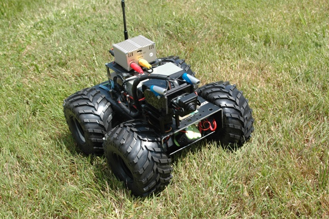

El otro día Yossua fue retado a un duelo, se celebrará en Campus Party 2008. El culpable TupperBot de Mif.
Por eso Yossua está buscando zaparos nuevos. Por ahora esto es lo que ha encontrado.

Andrés
El otro día Yossua fue retado a un duelo, se celebrará en Campus Party 2008. El culpable TupperBot de Mif.
Por eso Yossua está buscando zaparos nuevos. Por ahora esto es lo que ha encontrado.

Andrés
Comments are closed.
¡¡¡Jajajaja!!!
mierda… ¡yo pensaba que mis ruedas eran grandes!
Que barbaridad Andrés!